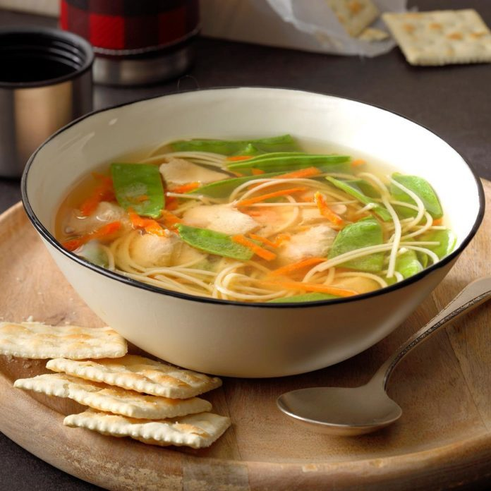

Ginger chicken noodle soup🍜
This is one of the soup recipes to serve in the wintertime as it's super easy to make and it fills the
house with a wonderful aroma.

Recipe
Course: Main
Cuisine: Chinese
Preparation Time: 3.5 hours
Ingredients:
- 1 pound boneless skinless chicken breasts, cubed
- 2 medium carrots, shredded
- 3 tablespoons sherry or reduced-sodium chicken broth
- 2 tablespoons rice vinegar
- 1 tablespoon reduced-sodium soy sauce
- 2 to 3 teaspoons minced fresh gingerroot
- 1/4 teaspoon pepper
- 6 cups reduced-sodium chicken broth
- 1 cup water
- 2 cups fresh snow peas, halved
- 2 ounces uncooked angel hair pasta, broken into thirds
Instructions:
- In a 5-qt. slow cooker, combine the first 9 ingredients. Cook, covered, on low 3-4 hours or until chicken is
tender.
- Stir in snow peas and pasta. Cook, covered, on low about 30 minutes longer, until snow peas and pasta are
tender.
Reference: Taken from here
Back to Main page